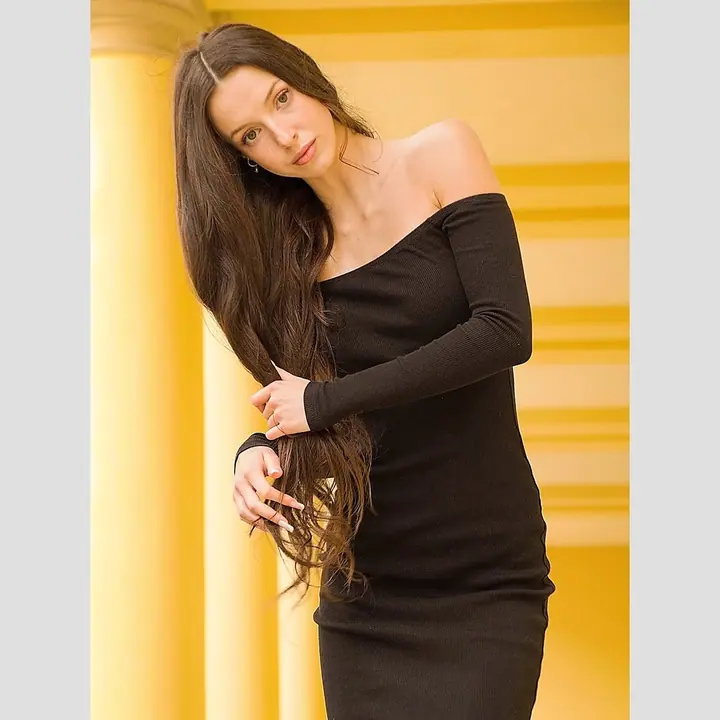
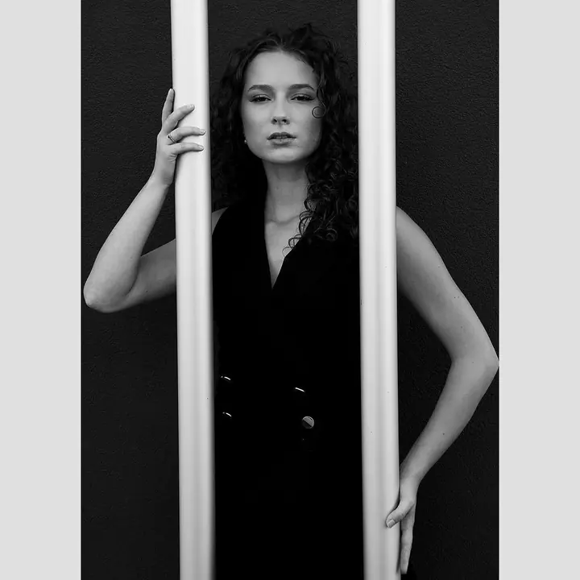

Portrétní focení
Fotím portréty venku, ve veřejně přístupných prostorech nebo u vás. Chci na fotkách ukázat vnitřní i vnější krásu člověka a k tomu i místo, kde fotka vznikla.

Portrétní fotograf
Jmenuji se Petr Pěnčík a fotím portréty ve svém ateliéru v Dolních Vítkovicích i venku v ulicích a u vody. Fotografie je pro mě koníček a forma relaxace vedle náročné profese lékaře, takže mi nejde o výdělek, ale hlavně o výsledek.
Zeptat se na termín
Fotím portréty venku, ve veřejně přístupných prostorech nebo u vás. Chci na fotkách ukázat vnitřní i vnější krásu člověka a k tomu i místo, kde fotka vznikla.
Od února 2022 mám vlastní fotoateliér v BrickHouse v Dolních Vítkovicích v Ostravě. Jsou tu čisté pozadí, klid a čas na světlo.
Z portrétních oborů mě nejvíc baví fashion, lifestyle a beauty fotografie. Fotím barevně i černobíle a vždy decentně.
S fotoaparáty jsem v kontaktu od nejútlejšího dětství, protože můj otec je také fotograf. Svou vlastní cestu k fotografii jsem ale hledal poměrně dlouho a intenzivněji se jí věnuji od roku 2016. Pořád se vzdělávám na kurzech a workshopech a doma mám slušnou fotografickou knihovnu.
Mým cílem je na fotkách vyjádřit vnitřní i vnější krásu každého, koho fotím, u dívek a žen i jejich půvab. Při focení venku je pro mě výzvou věrně zachytit i místo a jeho okolí. Miluji barevnou fotografii, v poslední době mě ale uchvátila i černobílá. Inspiraci hledám u Ruth Orkin, Bruce Webera nebo Helmuta Newtona a v obrazech Alfonse Muchy.
Nejsem fanouškem velké postprodukce a nevytvářím virtuální realitu. Fotky jen drobně upravím v českém Zoner Photo Studiu. Ve své práci dbám na decentnost a k fotkám mám velmi osobní vztah, skoro za každou se skrývá nějaký příběh.
Ozvěte se přes kontaktní formulář nebo e-mailem. Můžete se přihlásit i na některý z mých plánovaných projektů.
Detaily probereme osobně, telefonicky, e-mailem nebo přes videokonferenci. Termín je dobré plánovat s předstihem, ale vhodný určitě najdeme.
Fotíme v ateliéru v Dolních Vítkovicích, venku, ve veřejných prostorech nebo u vás. Vždy podepisujeme model release smlouvu o užívání fotografií.
Vybrané snímky drobně upravím v Zoner Photo Studiu, bez přehnané retuše, a pošlu vám je.
V ateliéru v BrickHouse v Dolních Vítkovicích v Ostravě, v exteriéru, ve veřejně přístupných prostorech nebo i u vás. Preferuji zájemce z Moravskoslezského, Olomouckého a Zlínského kraje.
Ano. Při TFP je focení pro obě strany zdarma a vy ve výsledku dostanete zdarma soubor fotografií. Vždy fotím se smlouvou o podmínkách užívání fotek.
Ne. Akty nefotím a ve své práci dbám na decentnost. Pro těhotenské, newborn nebo svatební focení si prosím vyberte jiného kolegu nebo kolegyni.
Jen drobně. Fotografii beru jako realistickou malbu světlem, ne jako virtuální realitu, a upravuji v Zoner Photo Studiu.